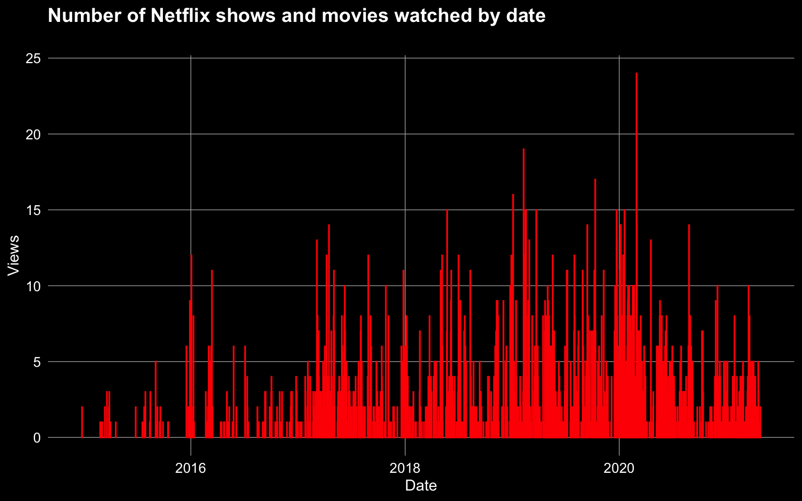
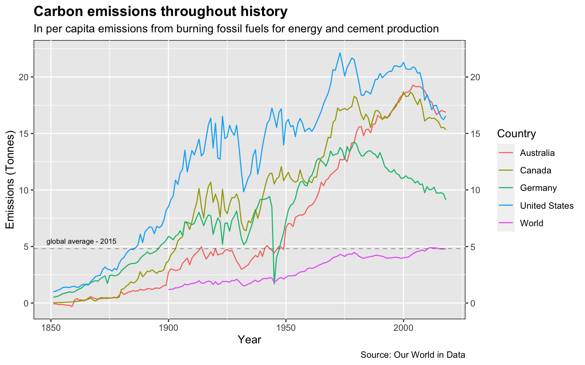
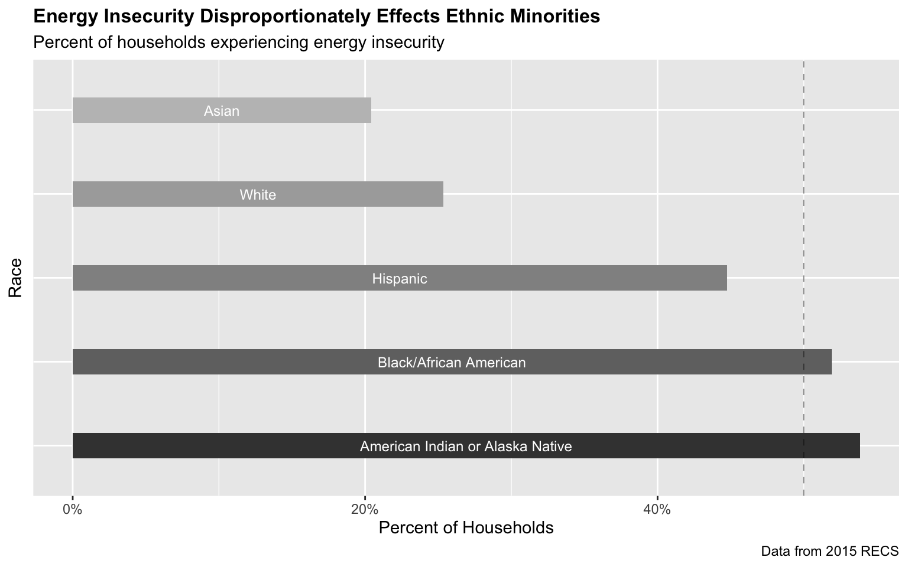
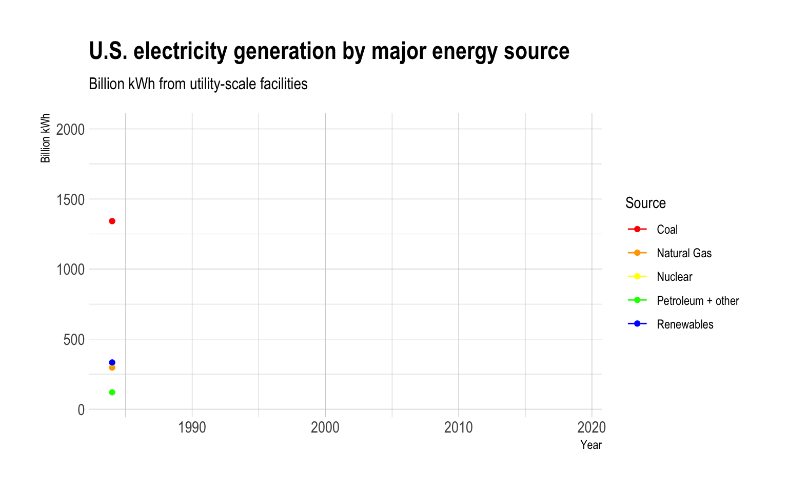
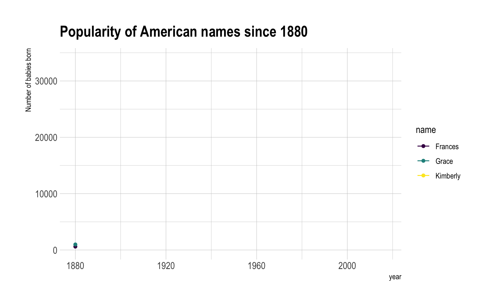

–
Here, I’ll be adding graphs and other visuals made in R on a variety of topics. I’m working on improving my R skills and enjoy trying out new packages and visualization tools, so these graphs are in no way meant to be professional quality and are simply a way for me to post my progress in this small portfolio. I’ve included data sources and a short description of each graph below. Enjoy!
Per Capita Carbon Emissions
2021 | 01 | 20
In this graph, we examine per capita \(CO_2\) emissions in the United States, Australia, Canada, and Germany using data from Our World in Data. The data looks at carbon dioxide emissions from burning fossil fuels for energy and cement production, in tonnes per capita. The graph includes global emissions per capita from 1900 onward, which follow a very different trend than the rest of data. Each of the countries included are OECD countries and follow a similar pattern with a steep increase in per capita emissions occurring after the Industrial Revolution, continuing until the start of the 21st century. Australia lagged slightly behind, experiencing a more gradual increase prior to 1950 and climbing sharply from that point forward. Germany had a striking drop in per capita emissions in 1945, likely stifled as due to the end of World War II, but recovered soon after. Over the years, the US has consistently had the highest per capita emissions of this group, but also appears to be falling at a slightly faster pace since 2000. Globally, emissions per capita are much lower than OECD countries, which highlights the huge disparity in energy access and usage experienced by billions. As more developed countries emissions begin to fall, it is crucial that less developed countries are still able to industrialize and experience the level of economic growth that initially brought about the massive increase in emissions in OECD countries 100 years ago, but through the implementation of cleaner technologies.

Global Energy Consumption
2021 | 01 | 09
In this graph, we look at global primary energy consumption by source from 1800 until present, using data from the BP Statistical Review of World Energy. Consumption has grown most rapidly from the 1950’s onward, but over the 200 year span, grew from an estimated 5653 TWh in 1800 to over 170,000 TWh in 2019. Biomass consumption has remained relatively constant over the entire time period, but was overtaken as the primary energy source by coal in 1910. Oil took off shortly afterwards, and surpassed coal consumption around 1965. At the same time, gas consumption was rising in popularity and today rivals coal. Hydropower and nuclear were the first two clean energy sources to be introduced in the mid 1900’s, but while hydropower has steadily climbed, nuclear power consumption reached a peak in 2006 and has leveled off since. Wind and solar power, while barely visible on this graph, have both grown exponentially over the last 20 years and now make up about 3% of global primary energy supply. Without a doubt, that percentage will be rising steadily in the next 30 years as nations across the globe commit to emission reductions and carbon free energy solutions in efforts to mitigate the impacts of climate change.
I’m working on some modifications to improve the readability of this graph, but this is it for now.
Energy Burden
2020 | 12 | 31
Energy burden, the proportion of household income spent on energy, is closely related to energy insecurity, discussed previously. In the map below, energy burden of low to moderate income households is displayed at the county level using data from the National Renewable Energy Laboratory. For reference, high energy burdens are defined as greater than 6% of income, while severe energy burdens are those greater than 10% of income. In the US, the average energy burden is approximately 3%, but for low income households, is nearly three times larger at about 8.6%. Energy burdens are far from equally distributed across the US with parts of Pennsylvania, West Virginia, Virginia, Kentucky and Tennessee all showing high energy burdens. Communities in the Gulf Coast and Southeast, especially Louisiana, Mississippi, Alabama, Georgia, and north Florida up to the Carolinas also experience high energy burdens. These areas may have particularly high electric and heating bills because of regional climate patterns, leading to decreased energy affordability and higher energy burdens for LMI households.

Energy Insecurity
2020 | 12 | 30
The U.S. Energy and Information Administration Residential Energy Consumption Survey, conducted every 4-5 years, looks at energy insecurity, which is defined by the criteria of reducing or forgoing food or medicine to pay energy costs, leaving the home at an unhealthy temperature, receiving disconnect or delivery stop notice from utilities, and the inability to use heating and/or cooling equipment to limit energy costs. About 37 million households experienced energy insecurity in 2015, which is over 30% of American households. Breaking this down by race, major disparity is observed, with only quarter of white households experiencing energy insecurity, while 44% of Hispanic households, 52% of black or African American households, and 54% of American Indian or Alaskan Native households experienced energy insecurity.

Electricity Generation by Source
2020 | 12 | 23
This plot shows US electricity generation since 1984 broken down by generation source using data from the US Energy Information Administration. As you can see, coal was the primary source leading into the 21st century, but just before 2010, dropped off sharply and was overtaken by natural gas. Around the same time, petroleum also began to fall. On the other hand, renewables have been climbing steadily since the early 90s and the rate of increase took off in the mid 2000s. Nuclear power saw an earlier increase, rising most before 2000, and leveling off from that point forward. Going into the 2020s, it’s expected that coal power will continue to drop off and renewables will make up the lost generation. Nuclear power has huge potential to assist in replacing fossil fuels and as an excellent clean energy source, could be vital in reaching emission reduction goals in the future.

White Christmas
2020 | 12 | 22
It’s that time of year! In this graph, I used 2016 data from the National Oceanic and Atmospheric Administration which estimated the probability of a white Christmas based on data collected over the past 3 decades. I used several new packages for this, including “usmap”, “rnaturalearthdata”, and “sf”. Unfortunately, I was lacking data from the west half of the US, so the data points were not as dense as I had hoped. I also think in the future, it would be interesting to try to find a way to map this over time, so the change in probability from year to year can be observed through animation or a year slider. Anyway, the results here are no surprise, with northern areas much more likely to experience snow. Of course, whether or not it snows in your region will depend highly on local weather patterns on or before the 25th, which can be found at Weather.gov. Happy holidays!
TED Spread
2020 | 12 | 20
This graph is a simple plot of the TED Spread from 1986 until present day, using data from FRED. The TED spread is the difference between the three-month Treasury bill and the three-month LIBOR based in US dollars, or in other words, the difference between the interest rate on short-term US government debt and the interest rate on interbank loans. It can be used as an indicator of the solvency of financial institutions, monetary liquidity, and percieved risk of the financial system and as a result, is considered important to investment analysis. To make this graph, I used the package “dygraphs” which displays data point values on the graph when hovered over and allows the viewer to adjust the x axis as desired.
Baby Names
2020 | 12 | 20
A fun plot made using data from the R package “babynames”. I selected my name, as well as my sister and mothers names to plot from 1880 until present day. Frances was most popular around 1920, while Grace peaked in popularity around 2000, a few years after I was born. Kimberly experienced the most dramatic spike in popularity in the late 1960’s, which was around the time my mother was born. Looking at this data, it appears that my mother had the trendiest name, while I was named slightly ahead of the trend. Interestingly, Frances and Grace seem to follow a similar trend from 1880 - 1980.
